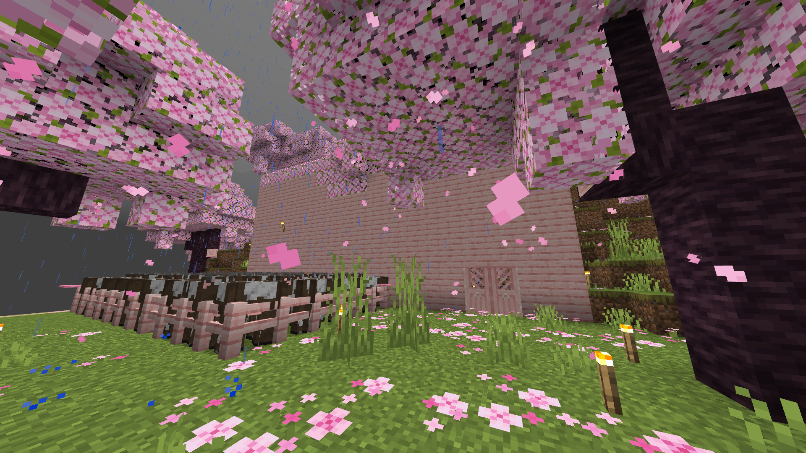
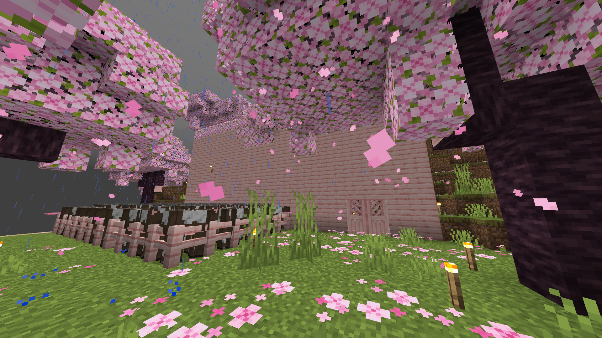

桜バイオーム
詳細
私の家はみんなの居る徒歩島から遠く離れた桜バイオームに位置しています
座標
(X,Y,Z)=(-6538,111,-18301)
拠点まではネザーを通って3000マス歩きます！
私たちの最後の目標はここと真反対の方向にあるドーナツ型の桜バイオームに拠点を作ることです！
私の家はみんなの居る徒歩島から遠く離れた桜バイオームに位置しています
(X,Y,Z)=(-6538,111,-18301)
拠点まではネザーを通って3000マス歩きます！
私たちの最後の目標はここと真反対の方向にあるドーナツ型の桜バイオームに拠点を作ることです！